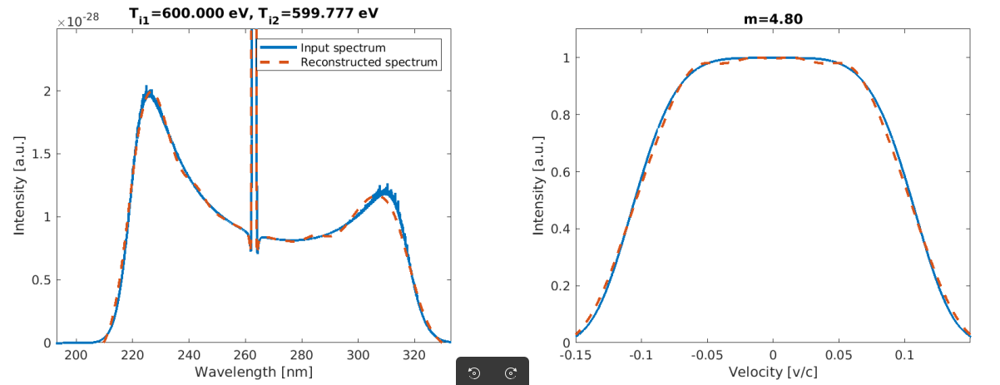

Roots of linearization equations
Equations are,
$$
\left(\omega-\omega_{1}\right) \left(\omega-\omega_{2}\right) \left(\omega-\omega_{3}\right) \left(\omega-\omega_{4}\right)=c^{2} k^{2} \omega_{p}^{2} a_{0}^{2}
\tag{7}
$$
where,
$$
\omega_{1,2}=\omega_{0}\pm \sqrt{\omega_{p}^{2}+c^{2} \left(k_{0}-k\right)^{2}}
\tag{8}
$$
$$
\omega_{3,4}=-\frac{i \nu_{e}\pm \sqrt{-\nu_{e}^{2}+4 \left(\omega_{p}^{2}+3 v_{B}^{2} k^{2}\right)}}{2}
\tag{9}
$$

